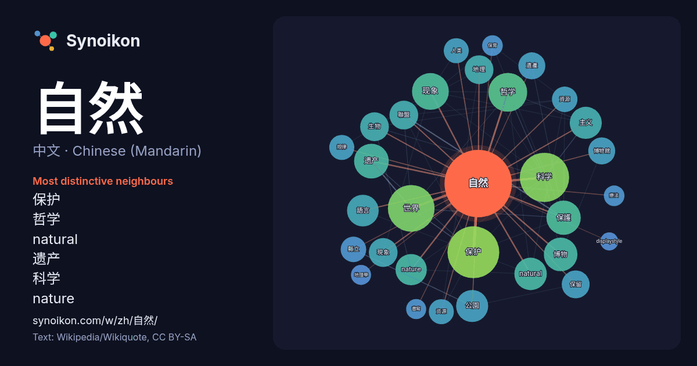

中文 · Chinese (Mandarin) · popular word
自然
“nature” · The words found around it in 1926 instances from Chinese (Mandarin) Wikipedia, Wikiquote.

Most distinctive neighbours
- 保护 44×
- 哲学 42×
- natural 40×
- 遗产 39×
- 科学 39×
- nature 37×
- 现象 35×
- 博物 27×
- 縣立 25×
- 遺產 25×
- 公園 25×
- 规律 23×
- 博物館 21×
- 現象 21×
- 地理 21×
- 保護 20×
- 語言 20×
- 資源 18×
- 资源 17×
- 聯盟 17×
× = how many times more often than in general Chinese (Mandarin) Wikipedia text.
Most frequent neighbours
- 保护 107
- 科学 97
- 世界 87
- 国家 65
- 哲学 60
- 文化 56
- 现象 54
- 遗产 48
- 保護 47
- 博物 45
- 研究 44
- natural 42
- 主义 41
- 公園 41
- 語言 40
- nature 39
- 方法 37
- 历史 34
- 地理 33
- 現象 33
In context
- 自然现象。从探索超自然现象到认识自然现象，人类逐步理解自身、适应生存环境，并丰富社会活动。 “自”的意思是“自我”、“由来”；“然”是“燃”的本字，本意是“燃烧”，在先秦时期语法化，含义变为“～的样子”。因此，“自然”的字面意思即“本来的样子”。 「自然 Wikipedia snippets · 自然
- 自然哲学（英語：natural philosophy），又称自然的神学或实验哲学，是现代自然科学的前身，主要指近代以前对自然和物质宇宙的系统性研究和思考，排除了任何超自然因素的影响。弗朗西斯·培根称自然哲学为「科学的伟大母亲」。19世纪以后，实证和实验取向的现代科学逐渐从哲学中分离出来，自然哲学这一术语也大多被「自然科 … Wikipedia snippets · 自然哲学
- 自然觀察解說員，曾任中央通訊社董事長。 劉克襄從事自然觀察、歷史旅行與舊路探勘十餘年，外號「鳥人」。 至今出版詩、散文、長篇小說、繪本和攝影作品二十餘部。 劉克襄1957年生於台中，畢業於台中一中、私立中國文化大學新聞學系。 劉克襄的文學由詩作起步，就讀文化大學期間，對於自然 Wikipedia snippets · 劉克襄
- 产生影响（與婆羅門教對梵天的解釋相仿）。這裡的自然神論主要是指具有亞伯拉罕諸教背景，並受其影響的西方唯一神教派自然神論者的觀點，而不是具有多神教背景的自然神論者等的觀點如泛自然神論。 自然神论者推崇理性原则，把上帝解释为非人格的始因的宗教哲学理论。又称理性神论。由17世纪英国思想家赫伯特爵士始创， Wikipedia snippets · 自然神论
- 自然宗教或神学不仅限于对自然的经验性探究，也不会与泛神论的结果结合。 但是，它的确避免了吸引特殊的非自然才能（心灵感应，神秘经历）或超自然的信息来源（神圣的文本，神学的揭示，信条权威，直接的超自然交流）。 通常，自然宗教或神学（以下简称“自然 Wikipedia snippets · 自然神学
- 自然語言處理（英語：Natural Language Processing，缩写作 NLP）是人工智慧和語言學領域的交叉學科，研究计算机处理、理解与生成人类语言的技術。此領域探討如何處理及運用自然語言；自然語言處理包括多方面和步骤，基本有认知、理解、生成等部分。 自然 Wikipedia snippets · 自然语言处理
- Heritage；法語：Patrimoine mondial）是由聯合國教科文組織管理，世界遺產委員會依據《保護世界文化和自然遺產公約》（簡稱《世界遺產公約》）決議通過的地標或區域，其分為自然遗产、文化遗产，以及兼具兩者的複合遺產。被列入世界遺產的地點，必須對全世界人類都具有突出的普遍價值（英語：Outstanding Wikipedia snippets · 世界遗产
- 五二四事件，又稱劉自然事件，是1957年一宗示威事件，發生於美國駐中華民國大使館（維基數據：Q115782902）所在的臺灣省臺北市（現直轄臺北市）中華路。本案為臺灣於第二次世界大戰結束後少有的幾次反美事件之一，亦為臺灣戒嚴時期罕見之大規模示威活動。 1957年3月20日，中華民國陸軍少校暨革命實踐研究院学员劉自然 Wikipedia snippets · 五二四事件
More Chinese (Mandarin) words
Precomputed on 2026-10-09 with default settings (±5 words, medium corpus). The interactive map can refresh it with live data.